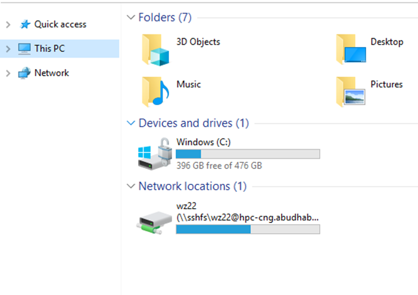

Mount $ARCHIVE with SSHFS¶
This page explains how to mount $ARCHIVE on the HPC with SSHFS on your local workstation.
Only $ARCHIVE is supported, not $HOME , $SCRATCH or any other file system on the HPC.
For mounting $ARCHIVE on Windows, Kindly follow the section here
Step-by-step guide¶
Note
You might need sudo for the operations below.
- Install SSHFS on your workstation.
Ubuntu:
apt-get install sshfs
CentOS:
yum install fuse-sshfs
MacOS:
Install FUSE and SSHFS from their official website https://osxfuse.github.io/
- On your terminal, mount the drive
sshfs <NetID>@hpc-cng.abudhabi.nyu.edu:/archive/<NetID> <Your-Local-Mount-Point>
For example, this command mount the
$ARCHIVEof NetIDwz22to the local path$HOME/work-wz22sshfs wz22@hpc-cng.abudhabi.nyu.edu:/archive/wz22 $HOME/work-wz22
These options might increase the speed.
sshfs -o auto_cache -o cache=yes -o kernel_cache -o compression=no -o large_read -o big_writes -o Ciphers=arcfour <NetID>@hpc-cng.abudhabi.nyu.edu:/archive/<NetID> <Your-Local-Mount-Point>
- Once done, unmount the drive.
umount <Your-Local-Mount-Point>
Mount $ARCHIVE on Windows¶
Navigate to your Windows File explorer
- Right click on
This PCand selectMap network drive:
- Right click on
- Enter the details and click
Finish: -
The
Drivecorresponds to the local mountpointThe
Foldercorresponds to the remote location.It should be noted that by default it connects to the/homeand a relative path to the mounting point (/work) should be specified. So in this case the syntax should be as follows:
\\sshfs\<net-id>@hpc-cng.abudhabi.nyu.edu\..\..\archive\<netid>
For example:
\\sshfs\wz22@hpc-cng.abudhabi.nyu.edu\..\..\archive\wz22
- Enter the details and click
- You will be prompted for a password, after which you would have successfully mounted
$ARCHIVEon to your local workstation. - 
- You will be prompted for a password, after which you would have successfully mounted